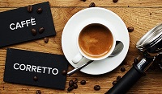

Кофе Коретто
250 мл
Стоимость:
210
руб.
Коретто – итальянская версия кофе с алкоголем. В переводе с итальянского corretto означает «приправленный». Напиток приправляют преимущественно граппой, бренди или самбукой.
Неизвестно, кто и когда придумал коретто. Идея согреться и взбодриться, добавив в кофе спиртное, наверняка возникла в те времена, когда Европа только знакомилась с ароматным напитком из кофейных зёрен. В каждой стране эта идея реализована по-своему.

В регионе Венето существует особый вариант кофе коретто – rexentìn (raxentìn). В переводе с местного диалекта это слово означает «ополаскивать». Гостю подают чашку кофе и рюмку граппы или ликёра по выбору. Сперва нужно налить чуть-чуть спиртного в кофе (буквально 5–10 мл), затем сделать один – два глотка. На дне останется немного кофе, его следует по своему вкусу разбавить алкоголем («ополоснуть» чашку). Таким образом, рексентин – это «двойной» коретто: сначала пьют кофе, приправленный спиртным, потом – спиртное, приправленное кофе.
В Испании аналог коретто называют карахильо (carajillo). В него добавляют ром, виски, бренди или анисовую водку. В Кастилии рецепт карахильо полностью повторяет рецепт коретто, в Каталонии в кофе добавляют больше спиртного. Португальский вариант кофе с алкоголем – Café com Cheirinho («кофе с ароматом»), скандинавский – kaffekask, karsk или kaffegök.
В Германии любят Rüdesheimer Kaffee. Для его приготовления бренди смешивают с сахаром и поджигают, а затем вливают кофе. Благодаря горению сахар карамелизируется, в результате аромат бренди становится более интенсивным.
Коретто могут подать гостю одним из двух способов:
1. Уже готовым;
2. Отдельно чашку с эспрессо, отдельно – рюмку с выбранным спиртным. Гость сам решает, в каких пропорциях смешать ингредиенты.
Коретто подают в чашках для эспрессо. Вместе с напитком гостю предлагают сахарницу или стикер сахара и ложечку.
В Италии принято поднять чашку с напитком, сказать: «Salute!» и выпить коретто в 1–2 глотка. Его закусывают лимоном, шоколадом, твёрдым сыром.
Коретто создаёт серьёзную нагрузку для сердечно-сосудистой системы. При гипертонии или заболеваниях сердца напиток употреблять не рекомендуется.
Обратно в меню
Стоимость:
210
руб.
1. Уже готовым;
2. Отдельно чашку с эспрессо, отдельно – рюмку с выбранным спиртным. Гость сам решает, в каких пропорциях смешать ингредиенты.
Коретто подают в чашках для эспрессо. Вместе с напитком гостю предлагают сахарницу или стикер сахара и ложечку.
Коретто создаёт серьёзную нагрузку для сердечно-сосудистой системы. При гипертонии или заболеваниях сердца напиток употреблять не рекомендуется.